Multi-modality large language models (MLLMs), as represented by GPT-4V, have introduced a paradigm shift for visual perception and understanding tasks, that a variety of abilities can be achieved within one foundation model. While current MLLMs demonstrate primary low-level visual abilities from the identification of low-level visual attributes (e.g., clarity, brightness) to the evaluation on image quality, there’s still an imperative to further improve the accuracy of MLLMs to substantially alleviate human burdens. To address this, we collect the first dataset consisting of human natural language feedback on low-level vision. Each feedback offers a comprehensive description of an image’s low-level visual attributes, culminating in an overall quality assessment. The constructed Q-Pathway dataset includes 58K detailed human feedbacks on 18,973 multi-sourced images with diverse low-level appearance. To ensure MLLMs can adeptly handle diverse queries, we further propose a GPT-participated transformation to convert these feedbacks into a rich set of 200K instruction-response pairs, termed Q-Instruct. Experimental results indicate that the Q-Instruct consistently elevates various low-level visual capabilities across multiple base models. We anticipate that our datasets can pave the way for a future that foundation models can assist humans on low-level visual tasks.
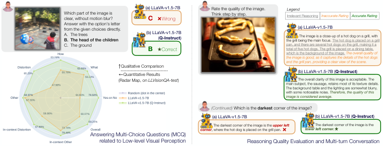
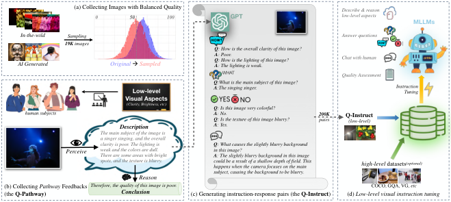
Computer vision has witnessed a recent paradigm shift attributed to the emergence of multi-modality large language models (MLLMs) [37, 30, 7, 11]. These models aim to transcend traditional task-specific experts, and serve as general-purpose foundation models capable of facilitating humans across a variety of visual tasks [25]. Specifically, these foundation models also bring exciting potentials in the domain of low-level visual perception and understanding. This domain includes not only commonly-focused image quality assessment (IQA) [14, 60, 55] tasks, but also finer-grained abilities to identify the low-level visual attributes (noise, blur, etc) [43], or evaluate the low-level visual dimensions (clarity, brightness, etc) [9, 56]. As human cognition associated with these tasks is highly interconnected, we aspire for a unified foundation model to establish general abilities across these tasks, which could robustly respond to open-ended human queries on low-level visual aspects.
Nevertheless, though existing MLLMs can basically reply to human queries regarding low-level visual aspects, the accuracy of their responses remains unsatisfactory [31, 57] (Fig. 1(a)). The primary problem is the lack of low-level visual datasets during training MLLMs, where publicly available datasets generally only focus on high-level visual abilities [32, 2, 16, 22]. To solve this problem, we construct the Q-Instruct, the first large-scale low-level visual instruction tuning dataset, in the following two steps:
Step 1: Collect human feedbacks for low-level vision.
For this step, we invite human subjects to provide direct feedbacks on their low-level perception and understanding over a variety of images (Fig. 2(b)). Specifically, each feedback should include two parts: 1) Primarily, an exhaustive description on elemental low-level attributes (e.g. blurs, noises, clarity, color, brightness). Such descriptions should also include content [27, 49] or position [52, 60] contexts (e.g. the duck / the left part of the image is under-exposed) that are related to low-level attributes. 2) Then, an overall conclusion on the image quality based on the description of the attributes. With the two parts, the feedbacks, denoted as pathway feedbacks, not only record fundamental human low-level perception but also reflect the human reasoning process on evaluating visual quality. The hence-constructed Q-Pathway dataset (Fig 2(b)) contains 58K pathway feedbacks on 18,973 multi-sourced images, each image with at least three feedbacks (avg. 46.4 words per feedback).
Step 2: Convert these feedbacks for instruction tuning.
While these pathway feedbacks themselves make up an important subset for the low-level visual instruction tuning, the full instruction tuning dataset should be designed to activate more capabilities. Primarily, it should also include a low-level visual question answering (VQA) subset. To generate a reliable VQA subset, we refer to the setting that how COCO-VQA [2] is derived from image captions, and employ GPT [36] to convert the pathway feedbacks into question-answer pairs with adjectives (e.g. good/fair/poor) or nouns (e.g. noise/motion blur) as answers. Similarly, we also collect a balanced yes-or-no question-answer set based on the information in the feedbacks (answered with yes), or information contrast to the feedbacks (answered with no); some context-related question-answer pairs are also created to better ground [62] the low-level attributes. Following existing studies [40], all question-answer pairs in the VQA subset include both multiple-choice (A/B/C/D) and direct-answer settings. Furthermore, besides the VQA subset, with the assistance of GPT, we also collect a subset of long conversations related to the low-level concerns (e.g. why the distortions happen, how to improve the picture quality). The subsets compose into the Q-Instruct dataset (Fig. 2(c)) with 200K instruction-response pairs, which is designed to enhance MLLMs on a variety of low-level visual abilities.
The core contributions of our study can be summarized as follows: 1) We collect the Q-Pathway, a multi-modality dataset for low-level visual perception and quality assessment, which includes direct human feedbacks (with reasoning) on low-level visual aspects. 2) Based on Q-Pathway, we construct the Q-Instruct, the first instruction tuning dataset that focuses on human queries related to low-level vision. 3) Our rich experiments on low-level visual instruction tuning ((Fig. 2 (d)) validate that the Q-Instruct improve various low-level abilities of MLLMs (Fig. 1), and bring insights for future studies to inject various low-level visual abilities into the scope of general foundation models.
Image quality assessment (IQA), targeting to predict accurate scores aligned with integrated human opinions on all low-level aspects, has always been the chief task in low-level visual perception. Many datasets are developed to address IQA on artificially-distorted images [17, 28] (JPEG, AWGN, etc), in-the-wild photographs [14, 60], or recently-popular AI-generated contents [26, 58], providing important metrics for visual content production and distribution. Despite general IQA, recent studies have started to focus on finer-grained low-level visual aspects, and explored some related tasks such as evaluating on low-level visual dimensions (e.g. color, brightness) [9, 56], or distinguishing the existing distortions (e.g. blur, noise, over-exposure) in images [43]. Some recent works [55, 53, 54] also consider some photography-related dimensions (e.g. composition, lighting, bokeh) [21] as a broader sense of low-level aspects. In general, low-level visual perceptual tasks can include all aspects of image appearance (in contrast to object-level contents) that can be perceived by human and evoke different human feelings. While these low-level visual tasks used to be tackled separately, the proposed datasets bring the opportunities to include, relate and learn these tasks together, supporting one foundational model to generally master on these tasks.
Similarly, the approaches designed for low-level visual perception also basically focus on their general IQA abilities. The traditional IQA metrics, e.g. NIQE [34], operate on discipline-based methodologies without training with human opinions, offering robust but less accurate evaluations. In contrast, deep learning-based methods [64, 42, 18, 8, 4, 51] utilize task-specific data, capitalizing on the extensive learning capacities of neural networks to tailor their assessment to particular data distributions, while they also suffer from compromised generalization abilities. Notably, recent methods [48, 65, 15, 67, 19] explore CLIP [38] for IQA, which stand out for their pioneer efforts on multi-modality integration for low-level vision, and exciting zero-shot performance. Their zero-shot IQA abilities are also inherited by most recent MLLMs [29, 63, 3]. Similar as NIQE, these multi-modality IQA methods are robust on various scenarios, yet not enough accurate on each single case. While these methods present improving performance on general IQA, the other finer-grained low-level visual perception abilities are still yet to be deeply investigated; moreover, tackling all these tasks separately may overlook the underlying relationships between them, refraining from reasoning among these sections. After instruction tuning with the proposed Q-Instruct, MLLMs can significantly improve their abilities on various low-level visual abilities, forecasting a future to unify these tasks through one model.
Large language models (LLMs), e.g. GPT-4 [37], T5 [6], LLaMA [46], has shown great language abilities regarding general human knowledge. With CLIP [38] and additional adapting modules to involve visual inputs into LLMs, the multi-modality large language models (MLLMs) [24, 11, 30, 7, 63] can tackle a variety of multi-modality tasks for high-level vision, such as image captioning [5, 1, 61], visual question answering (VQA) [2, 32, 40], and more language-related capabilities [31, 10, 23]. Nevertheless, the evaluation results in the recent benchmark [57] reveal that MLLMs’ low-level visual abilities are still unsatisfactory, especially when it comes to the finer-grained low-level perception questions. While we notice that this is mainly due to the lack of respective data, we collect the first low-level visual instruction tuning dataset, the Q-Instruct, to improve low-level visual abilities for different MLLMs, and bring them into the realm of low-level visual perception.
As the fundamental part of the dataset construction, we introduce the Q-Pathway, the first large scale dataset that collects text feedbacks from human on low-level visual aspects. To diversify and balance different low-level appearances, we sub-sample images from seven sources (Sec. 3.1) and reduce the skews in the source distributions (Tab. 1). After the preparation of images, we discuss the rationality and the detailed task definition for the pathway feedbacks (Sec. 3.2), a kind of natural language feedback, as collected in the Q-Pathway. The subjective study is conducted in-lab (Sec. 3.3), where all subjects are trained before providing feedback. The analysis of the Q-Pathway is in Sec. 3.4.
| Image Sources | Original Distribution | Sampled Distribution | ||||
|---|---|---|---|---|---|---|
| Size | Size | |||||
| KonIQ-10k [14] | 10,073 | 58.73 | 15.43 | 5,182 | 49.53 | 15.72 |
| SPAQ [9] | 11,125 | 50.32 | 20.90 | 10,797 | 49.46 | 20.63 |
| LIVE-FB [60] | 39,810 | 72.13 | 6.16 | 800 | 60.68 | 17.38 |
| LIVE-itw [12] | 1,169 | 55.38 | 20.27 | 200 | 55.70 | 19.83 |
| AGIQA-3K [26] | 2,982 | 50.00 | 19.80 | 400 | 40.80 | 21.80 |
| ImageRewardDB [58] | 50,000 | - w/o - | 584 | - w/o - | ||
| 15-distortion COCO [5] | 330,000 | - w/o - | 1,012 | - w/o - | ||
| Overall | 445,159 | 65.02 | 16.51 | 18,973 | 49.87 | 19.08 |
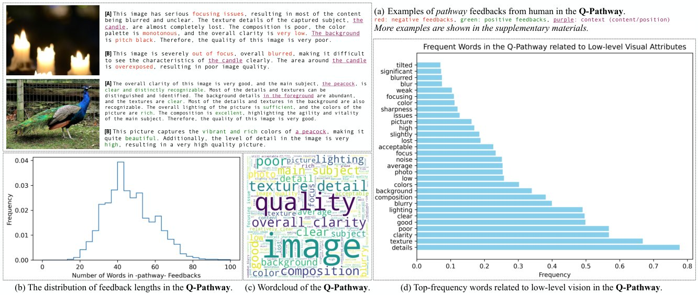
The images in the Q-Pathway are sampled from various sources, including four in-the-wild IQA datasets [9, 14, 60, 12], and two datasets with AI-generated images [26, 58]. Specifically, as compared in Tab. 1, the sub-sampled population of images is carefully constructed to introduce more diverse low-level appearances in the Q-Pathway, which is neither skewed towards positive appearances nor towards negative appearances. Moreover, to further diversify the low-level appearances of the collected images, we design a custom variant of imagecorruptions [33] to randomly corrupt 1,012 originally-pristine images from COCO [5] dataset with one in 15 artificial distortions. The assembled sub-sampled dataset consists of 18,973 images, which are further fed to human subjects to provide pathway feedbacks.
For the Q-Pathway, to collect a richer and more nuanced understanding of human perception on low-level visual aspects, instead of collecting multi-dimensional scores as in existing studies [9, 56], we opt to collect a new format of annotation, termed pathway feedbacks, with an exhaustive natural language description on low-level visual attributes e.g. noise, brightness, clarity) followed by a general conclusion. The rationales for this format are as follows: (1) Primarily, the descriptions can preserve what humans perceive more completely and precisely. For instance, if an image has both dark and bright areas such as Fig 3(a) upper, the brightness score might not properly record [60, 52] this situation: the positional context cannot be preserved, and the reliability of the score could also be compromised, as neither labeling it as ‘dark’ nor as ‘bright’ is accurate. (2) Moreover, unlike free-form text feedbacks, the order of the two parts in pathway feedbacks generally aligns with the human reasoning process. For instance, while human subjects are shown with an underexposed yet clear image, they can provide intuitive reasoning leading to eclectic conclusions like “Thus, the quality of the image is acceptable”. This reasoning will help MLLMs to better emulate human perception and understanding related to low-level vision. While this pathway-style format faces challenges to be transformed into machine learning objectives in the past, the emergence of MLLMs has provided the opportunity to learn from these direct human feedbacks, in order to allow machines to more precisely and robustly align with human perception.
The subjective study is carried out in a well-controlled laboratory environment, during which a total of 39 trained human subjects are invited. Based on task definition, training material includes not only calibration on overall quality, but also on the respective text descriptions of different low-level appearances shown in visuals. Furthermore, as the majority of images come from IQA datasets, the mean opinion scores (MOSs) of them are also displayed to subjects to better calibrate them with a common understanding of quality. To facilitate their feedback process, we also show a reference attribute set that can be used in the descriptions. To avoid test fatigue of subjects, consecutive feedbacks on more than 30 images will be warned and discouraged; it will be further forcefully paused after 50 images. 58K pathway feedbacks are collected during the study, as exemplified in Fig. 3(a).
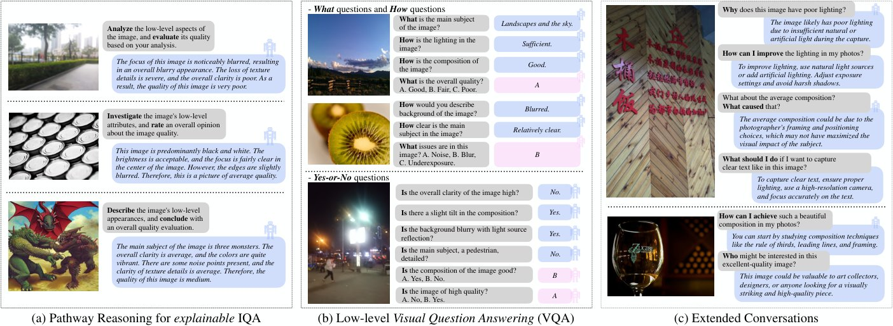
After the subjective study, we briefly analyze the collected feedbacks. Qualitatively (Fig. 3(a)), the pathway feedbacks can generally preserve the respective contexts related to low-level attributes. Moreover, feedbacks from different human subjects for the same image (as exemplified in [A] and [B] for each image) shows decent consistency (no controversial information), and slightly complements one another. Statistically, the length of feedbacks generally ranges from 20 to 100 words, with an average of 46.4 words, 4 times as long as common high-level image captions [5, 61] (Fig 3(b)). We also visualize the wordcloud [35] and the bar chart for the top frequency words related to low-level vision†† For better visualization, the two words that appear in every feedback, image and quality, are removed from the bar chart in Fig. 3(d)., demonstrating that the collected Q-Pathway covers a wide range of low-level attributes, and includes positive and negative feedbacks within similar proportions.
The long and diverse feedbacks in the Q-Pathway provides sufficient reference for the automatic generation process of instruction-response pairs to be used for low-level visual instruction tuning. While the pathway feedbacks themselves can teach MLLMs to reason low-level aspects and predict quality (Sec. 4.1), we design more instruction types to allow MLLMs to respond to a variety of human queries, including a visual question answering subset (Sec. 4.2) for more accurate low-level perception ability [57], and an extended conversation subset (Sec. 4.3) to allow MLLMs to seamlessly chat with human about topics related to low-level visual aspects. Overall, the Q-Instruct dataset includes 200K instruction-response pairs, with its details as follows.
Similar as image captioning [5, 1, 61], a general low-level visual description ability is also vital for MLLMs. As analyzed in Fig. 3, the pathway feedbacks are direct and holistic human responses that generally describe low-level visual appearances. Furthermore, these feedbacks provide reasoning from low-level attributes (brightness, clarity) to overall quality ratings (good/poor), which could activate the potential reasoning abilities [50, 20] of MLLMs on IQA. Henceforth, with each pathway feedback as response and a general prompt as instruction, we include 58K pathway reasoning (Fig. 4(a)) as the primary part of the Q-Instruct dataset.
Besides directly apply the Q-Pathway into low-level visual instruction tuning, we also design a GPT [36]-participated pipeline to convert them into a visual question answering (VQA) subset. In general, we ask GPT to generate diverse-style questions related to low-level-vision from the pathway feedbacks, and provide answers with as few words as possible. Via this process, we convert the feedbacks into 76K questions, including how questions answered with opinion-related adjectives (e.g. good/poor, high/low), or i.e. what questions answered with attribute-related (blur/noise/focus) or context-related (left/the peacock/the background) nouns, as shown in the upper part of Fig. 4(b). We further instruct GPT to generate binary judgments (yes/no, Fig. 4(b) lower) from the feedbacks, and balance yes and no into 1:1 ratio, with 57K yes-or-no questions collected at last. As for the answering format, following A-OKVQA [40], despite the direct answers, we also create several distracting answers for the questions, and convert them into an additional multi-choice question (MCQ) format (the pink boxes in Fig. 4(b)).
While the first two subsets are designed to enhance the fundamental language-related abilities for low-level vision, the third subset of the Q-Instruct, the extended conversations (Fig. 4(c)), focuses on improving the ability to discuss with human grounded on the low-level visual aspects of an input image. These discussions include five major scopes: 1) Examining the causes of low-level visual patterns; 2) Providing improvement suggestions on photography; 3) Providing tools to restore, enhance, or edit the image; 4) Recommending the image to respective consumers; 5) Other conversations that may happen given the low-level visual descriptions provided in the pathway feedbacks. Similarly, the extended conversation subset is also generated by GPT, with in total 12K conversations collected for the Q-Instruct.
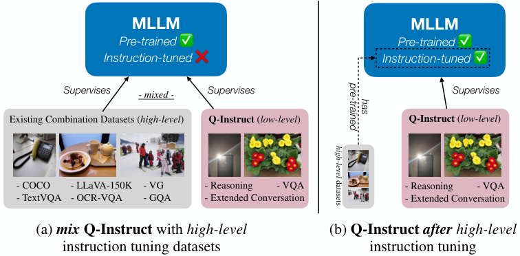
In this section, we discuss the standard training strategies for low-level visual instruction tuning, i.e. when to involve the Q-Instruct dataset during the training of MLLMs. In general, the training of open-source MLLMs [7, 24, 63] includes two stages: First, aligning the representation space of the visual backbone and the LLM with million-scale web data [39, 41]. Second, visual instruction tuning with a combination of human-labeled datasets [62, 2, 5, 32]. Considering the scale of the Q-Instruct, a general strategy is to mix its instruction-response pairs with the high-level datasets in the second stage, so as to ideally built their low-level visual abilities within general high-level awareness, as shown in Fig. 5(a). Another faster and more convenient strategy is a further third stage only with the Q-Instruct (Fig. 5(b)) after original high-level tuning. In our experiments, we validate that they both bring notable improvements on various low-level visual tasks, and involving high-level awareness contributes to the effectiveness of both strategies.
We pick four variants of three state-of-the-art MLLMs within diverse meta structures (Tab. 2) as baseline models to evaluate their low-level visual abilities before and after training with the Q-Instruct. Each model is evaluated under both strategies as in Fig. 5, with the original combination of high-level datasets unchanged.
| Model Name | Visual Backbone | VL Module | Language Model |
|---|---|---|---|
| LLaVA-v1.5 (7B) [29] | CLIP-ViT-L14↑336 | MLP | Vicuna-v1.5-7B [68] |
| LLaVA-v1.5 (13B) [29] | CLIP-ViT-L14↑336 | MLP | Vicuna-v1.5-13B [68] |
| mPLUG-Owl-2 [59] | CLIP-ViT-L14↑448 | Abstractor | LLaMA2-7B [47] |
| InternLM-XComposer-VL [63] | EVA-CLIP-G | Perceive Sampler | InternLM-7B [45] |
| Model (variant) | Q-Instruct Strategy | Yes-or-No | What | How | Distortion | Other | I-C Distortion | I-C Other | Overall |
|---|---|---|---|---|---|---|---|---|---|
| random guess | – | 50.00% | 27.86% | 33.31% | 37.89% | 38.48% | 38.28% | 35.82% | 37.80% |
| LLaVA-v1.5 (7B) | no (Baseline) | 66.36% | 58.19% | 50.51% | 49.42% | 65.74% | 54.61% | 70.61% | 58.66% |
| (a) mix with high-level | 76.18% | 66.37% | 57.61% | 65.18% | 67.59% | 64.80% | 73.06% | 67.09% | |
| (b) after high-level | 76.91% | 65.04% | 55.78% | 64.01% | 67.13% | 64.80% | 71.84% | 66.35% | |
| LLaVA-v1.5 (13B) | no (Baseline) | 65.27% | 64.38% | 56.59% | 56.03% | 67.13% | 61.18% | 67.35% | 62.14% |
| (a) mix with high-level | 76.18% | 65.71% | 59.23% | 64.39% | 69.91% | 62.50% | 75.51% | 67.42% | |
| (b) after high-level | 76.36% | 65.04% | 58.42% | 65.56% | 66.44% | 64.47% | 74.29% | 67.02% | |
| mPLUG-Owl-2 | no (Baseline) | 72.18% | 57.96% | 56.19% | 56.68% | 69.21% | 53.29% | 72.65% | 61.61% |
| (a) mix with high-level | 75.64% | 67.04% | 59.03% | 71.01% | 65.28% | 63.16% | 69.80% | 67.56% | |
| (b) after high-level | 76.00% | 65.04% | 61.66% | 65.95% | 68.75% | 65.46% | 73.88% | 67.96% | |
| InternLM-XComposer-VL | no (Baseline) | 69.45% | 65.27% | 60.85% | 61.67% | 70.14% | 56.91% | 75.10% | 65.35% |
| (a) mix with high-level | 76.73% | 69.91% | 63.89% | 70.23% | 71.53% | 67.43% | 72.65% | 70.43% | |
| (b) after high-level | 78.36% | 68.58% | 63.08% | 65.37% | 73.15% | 68.42% | 78.37% | 70.37% |
| Model (variant) | Q-Instruct Strategy | Yes-or-No | What | How | Distortion | Other | I-C Distortion | I-C Other | Overall |
|---|---|---|---|---|---|---|---|---|---|
| random guess | – | 50.00% | 28.48% | 33.30% | 37.24% | 38.50% | 39.13% | 37.10% | 37.94% |
| LLaVA-v1.5 (7B) | no (Baseline) | 64.60% | 59.22% | 55.76% | 47.98% | 67.30% | 58.90% | 73.76% | 60.07% |
| (a) mix with high-level | 78.65% | 63.99% | 63.79% | 65.26% | 68.97% | 67.81% | 79.47% | 69.30% | |
| (b) after high-level | 78.46% | 63.34% | 58.85% | 60.46% | 68.74% | 69.52% | 76.81% | 67.42% | |
| LLaVA-v1.5 (13B) | no (baseline) | 64.96% | 64.86% | 54.12% | 53.55% | 66.59% | 58.90% | 71.48% | 61.40% |
| (a) mix with high-level | 77.19% | 68.55% | 65.43% | 64.68% | 71.12% | 67.47% | 85.55% | 70.70% | |
| (b) after high-level | 80.66% | 67.25% | 61.93% | 66.03% | 70.41% | 69.86% | 79.85% | 70.43% | |
| mPLUG-Owl-2 | no (Baseline) | 72.26% | 55.53% | 58.64% | 52.59% | 71.36% | 58.90% | 73.00% | 62.68% |
| (a) mix with high-level | 78.47% | 67.90% | 63.37% | 68.52% | 68.02% | 70.21% | 77.57% | 70.30% | |
| (b) after high-level | 78.47% | 60.74% | 66.46% | 63.34% | 71.36% | 68.15% | 77.95% | 69.10% | |
| InternLM-XComposer-VL | no (Baseline) | 68.43% | 62.04% | 61.93% | 56.81% | 70.41% | 57.53% | 77.19% | 64.35% |
| (a) mix with high-level | 78.65% | 68.33% | 66.26% | 70.24% | 71.12% | 68.15% | 77.95% | 71.44% | |
| (b) after high-level | 79.56% | 64.64% | 65.43% | 64.30% | 71.60% | 66.44% | 84.79% | 70.37% |
We follow the default instruction tuning hyper-parameters of MLLMs during all training processes involving the Q-Instruct. As we aim to reach a unified low-level visual foundation model, for each MLLM, the final checkpoint is saved and tested for all evaluations. To avoid data contamination, during training, we remove data items with images that may appear in the evaluation sets.
The low-level visual abilities of MLLMs after low-level visual instruction tuning are quantitatively evaluated in three tasks defined by [57], including (A1) Perception, by measuring the accuracy of answering multi-choice questions (MCQ) related to low-level vision (Fig. 1); (A2) Description, which examines how MLLMs can generally transform low-level visual information into text. As for (A3) Quality Assessment, considering that the Q-Instruct already contains a large proportion of images in major IQA databases, we evaluate and discuss how the instructed MLLMs generalize on unseen images. For reproducibility, all responses from MLLMs are generated with greedy search. Qualitative analyses are provided in supplementary materials.
From Tab. 3 and Tab. 4, we observe that either strategy of including Q-Instruct into the training of MLLMs can significantly improve their low-level perception ability. The results demonstrate the effectiveness of the proposed pipeline to automatically generate the VQA subset (including MCQ) from the pathway feedbacks via GPT, which could be expected to extend to further query types. Specifically, among all dimensions, we notice that the accuracy on Yes-or-No question type is most significantly enhanced (avg. more than 10%). Moreover, improvements on distortions are more significant than on other low-level attributes (aesthetics, photography techniques), suggesting that the major concerns as raised by human in the Q-Pathway are still related to distortions. We hope that our pipeline can be extended to cover more types of questions and a broader range of concerns in the future.
The low-level visual instruction tuning also notably improve the low-level description ability of MLLMs, especially on the relevance (+0.31), with all tuned variants obtaining more than 1.5/2 average score. In contrast, the improvements on completeness (+0.17) and precision (+0.04) are less significant, implying that the captioning-like instruction format may not be sufficient for the low-level description task that requires much longer responses. We look forward to better solutions in the future.
| Model (variant) | Q-Instruct Strategy | completeness | precision | relevance | sum |
|---|---|---|---|---|---|
| LLaVA-v1.5 (7B) | no (Baseline) | 0.90 | 1.13 | 1.18 | 3.21 |
| (a) mix w/ high-level | 1.12 | 1.17 | 1.57 | 3.86 | |
| (b) after high-level | 1.11 | 1.16 | 1.54 | 3.82 | |
| LLaVA-v1.5 (13B) | no (Baseline) | 0.91 | 1.28 | 1.29 | 3.47 |
| (a) mix w/ high-level | 1.14 | 1.29 | 1.58 | 4.01 | |
| (b) after high-level | 1.13 | 1.26 | 1.61 | 4.00 | |
| mPLUG-Owl-2 | no (Baseline) | 1.06 | 1.24 | 1.36 | 3.67 |
| (a) mix w/ high-level | 1.18 | 1.29 | 1.57 | 4.04 | |
| (b) after high-level | 1.16 | 1.27 | 1.57 | 3.99 | |
| InternLM-XComposer-VL | no (Baseline) | 1.03 | 1.26 | 1.27 | 3.56 |
| (a) mix w/ high-level | 1.16 | 1.35 | 1.63 | 4.14 | |
| (b) after high-level | 1.18 | 1.34 | 1.62 | 4.14 | |
| Average Improvement | +0.17 | +0.04 | +0.31 | +0.52 | |
| Dataset Group | Mostly Seen | Barely Seen | Never Seen | ||||||
| % of dataset seen during training | 48.92% | 95.26% | 2.00% | 17.11% | 13.41% | 0% | 0% | 0% | |
| Model (variant) | Q-Instruct Strategy | KonIQ-10k | SPAQ | LIVE-FB | LIVE-itw | AGIQA-3K | CGIQA-6K | KADID-10K | KonViD-1k |
| NIQE | – | 0.316 / 0.377 | 0.693 / 0.669 | 0.211 / 0.288 | 0.480 / 0.451 | 0.562 / 0.517 | 0.075 / 0.056 | 0.374 / 0.428 | 0.541 / 0.553 |
| LLaVA-v1.5 (7B) | no (Baseline) | 0.463 / 0.459 | 0.443 / 0.467 | 0.310 / 0.339 | 0.445 / 0.481 | 0.664 / 0.754 | 0.285 / 0.297 | 0.390 / 0.400 | 0.461 / 0.495 |
| (a) mix w/ high-level | 0.809 / 0.852 | 0.880 / 0.883 | 0.377 / 0.436 | 0.800 / 0.806 | 0.724 / 0.828 | 0.521 / 0.535 | 0.688 / 0.695 | 0.766 / 0.717 | |
| (b) after high-level | 0.793 / 0.850 | 0.887 / 0.888 | 0.385 / 0.447 | 0.805 / 0.810 | 0.729 / 0.830 | 0.501 / 0.524 | 0.695 / 0.702 | 0.780 / 0.731 | |
| LLaVA-v1.5 (13B) | no (Baseline) | 0.471 / 0.541 | 0.563 / 0.584 | 0.305 / 0.321 | 0.344 / 0.358 | 0.672 / 0.738 | 0.321 / 0.333 | 0.417 / 0.440 | 0.518 / 0.577 |
| (a) mix w/ high-level | 0.732 / 0.787 | 0.858 / 0.848 | 0.371 / 0.463 | 0.629 / 0.701 | 0.709 / 0.814 | 0.471 / 0.488 | 0.627 / 0.626 | 0.720 / 0.733 | |
| (b) after high-level | 0.748 / 0.798 | 0.867 / 0.869 | 0.359 / 0.417 | 0.695 / 0.719 | 0.696 / 0.766 | 0.494 / 0.516 | 0.633 / 0.641 | 0.706 / 0.692 | |
| mPLUG-Owl-2 | no (Baseline) | 0.196 / 0.252 | 0.589 / 0.614 | 0.217 / 0.286 | 0.293 / 0.342 | 0.473 / 0.492 | -0.024 / -0.032 | 0.541 / 0.546 | 0.409 / 0.442 |
| (a) mix w/ high-level | 0.899 / 0.916 | 0.899 / 0.903 | 0.432 / 0.545 | 0.829 / 0.822 | 0.743 / 0.806 | 0.624 / 0.636 | 0.698 / 0.676 | 0.693 / 0.663 | |
| (b) after high-level | 0.911 / 0.921 | 0.901 / 0.898 | 0.442 / 0.535 | 0.842 / 0.840 | 0.700 / 0.763 | 0.572 / 0.578 | 0.682 / 0.683 | 0.769 / 0.721 | |
| InternLM-XComposer-VL | no (Baseline) | 0.568 / 0.616 | 0.731 / 0.751 | 0.358 / 0.413 | 0.619 / 0.678 | 0.734 / 0.777 | 0.246 / 0.268 | 0.540 / 0.563 | 0.620 / 0.649 |
| (a) mix w/ high-level | 0.874 / 0.892 | 0.909 / 0.897 | 0.442 / 0.518 | 0.820 / 0.811 | 0.785 / 0.830 | 0.391 / 0.411 | 0.706 / 0.710 | 0.739 / 0.702 | |
| (b) after high-level | 0.816 / 0.858 | 0.879 / 0.884 | 0.443 / 0.510 | 0.771 / 0.801 | 0.772 / 0.847 | 0.394 / 0.420 | 0.677 / 0.645 | 0.743 / 0.730 | |
| Average Improvement | +0.398/+0.392 | +0.304/+0.280 | +0.108/+0.144 | +0.349/+0.324 | +0.097/+0.120 | +0.289/+0.297 | +0.204/+0.185 | +0.238/+0.170 | |
Despite the two directly tuned tasks, we follow the softmax pooling strategy [57] to extract quality scores from MLLMs and evaluate their IQA ability, as listed in Tab. 6. Primarily, we notice the excellent performance on two “mostly seen” datasets. As we do not directly use any MOS values during training, this result suggests that we can effectively tune MLLMs to reach very high accuracy on IQA without any numerical values as supervision. This result by-side suggests the high reliability of the proposed datasets. The more exciting results are the huge improvements on “barely seen” (with a small proportion of images sampled into the Q-Instruct) and even “never seen” (cross-set) datasets. Considering the three “never seen” datasets [66, 13, 28] (with computer-generated images, artificially-degraded image, and even videos respectively) have notable domain gap with the major part of the Q-Instruct dataset (mostly in-the-wild photographs), the +0.243 average SRCC gain on them demonstrates that the low-level instruction tuning can robustly improve low-level perception abilities of MLLMs on a broad domain.
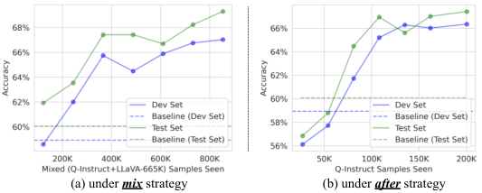
Despite the main results for low-level visual instruction tuning, we also compare among several data variations during tuning on LLaVA-v1.5 (7B), analyzed as follows.
The first group of variations discuss the effects of data amount during low-level visual instruction tuning. As illustrated in Fig. 6, under either mix or after strategy, scaling up the Q-Instruct during training can continuously improve the low-level perceptual accuracy. Moreover, the results suggest that the performance of MLLMs is still not saturated even with the current 200K data scale, encouraging us to further unleash their vast underlying power on tackling low-level visual tasks.
| Q-Instruct Strategy | low-level dataset | completeness | precision | relevance | sum |
|---|---|---|---|---|---|
| no (Baseline) | None | 0.90 | 1.13 | 1.18 | 3.21 |
| (a) mix w/ high-level | only Q-Pathway | 1.07 | 1.13 | 1.54 | 3.74 |
| full Q-Instruct | 1.12 | 1.17 | 1.57 | 3.86 | |
| (b) after high-level | only Q-Pathway | 1.02 | 1.12 | 1.55 | 3.69 |
| full Q-Instruct | 1.11 | 1.16 | 1.54 | 3.82 |
| Q-Instruct Strategy | low-level dataset | Yes-or-No | What | How | Overall |
|---|---|---|---|---|---|
| no (Baseline) | None | 64.6% | 59.2% | 55.8% | 60.1% |
| (a) mix w/ high-level | only VQA subset | 78.1% | 61.5% | 61.5% | 67.6% |
| full Q-Instruct | 78.7% | 64.0% | 63.8% | 69.3% | |
| (b) after high-level | only VQA subset | 77.9% | 61.8% | 56.8% | 66.1% |
| full Q-Instruct | 78.5% | 63.3% | 58.9% | 67.4% |
In the low-level visual instruction tuning, we combine different subsets together and train them jointly under one unified model. To validate its effectiveness, we compare this approach with traditional task-separate tuning, on both low-level description (Tab. 7) and question-answering (Tab. 8) capabilities. Both experiments indicate that a joint learning scheme can improve the accuracy on these abilities, especially when low-level data is independently used during tuning. While the different subsets in the Q-Instruct come from the same original human feedbacks, the improvement is cost-efficient, and inspires further explorations for low-level visual instruction tuning to expand to even more tasks, so as to further improve the low-level capabilities of these MLLMs.
| Q-Instruct Strategy | Yes-or-No | What | How | Overall |
| no (Baseline) | 64.6% | 59.2% | 55.8% | 60.1% |
| replace high-level (not adopted) | 75.0% | 59.4% | 56.4% | 64.1% |
| mix with high-level (ours, strategy (a)) | 78.7% | 64.0% | 63.8% | 69.3% |
| after high-level (ours, strategy (b)) | 78.5% | 63.3% | 58.9% | 67.4% |
While we notice generally on par abilities between the mix strategy and the after strategy, we further investigate the performance if we replace the second stage datasets into the Q-Instruct, while no high-level instruction tuning datasets are involved during training. As compared in Tab. 9, the “replace” strategy is notably worse than the two adopted strategies in Sec. 5, suggesting that fundamental high-level awareness is important on general low-level visual recognition for MLLMs.
Our work proposes the first-of-a-kind multi-modal datasets on low-level visual aspects, including the Q-Pathway with 58K human text feedbacks, and the derived Q-Instruct with 200K instruction-response pairs, to facilitate low-level visual instruction tuning for MLLMs. They allow MLLMs to significantly improve their question-answering accuracy related to low-level visual perception, and showcase the potential for providing more reliable low-level descriptions for images and eventually relieving human burdens on this task. Further, their IQA performance reveals an intriguing phenomenon, that pure text-driven instruction tuning can sufficiently align MLLMs with numerical quality scores, with impressive generalization on unseen types of visual inputs. In summary, our work has advanced a solid step forward on improving the low-level visual abilities of MLLMs, and we hope that our progress and insights can encourage future explorations towards an eventual goal that foundation models understand the low-level visual world like a human.
Supplementary Material
The interface for the subjective experiments is built upon Gradio 3.34.0, set up locally on Ubuntu 20.04 workstations. All participants need to record their ID and write down their pathway feedbacks for a given image. The MOS for the image and possible low-level attributes are listed as reference. A screenshot of the interface is shown in Fig. 7.
Generate multiple question and answer pairs based on the following description of an image quality. The questions can start with ”What/Why/How”. The answer should be concise and only contain the core information with minimum words. You should also generate several false answers for each question under the key of “false candidates”, which are also reasonable given the question by contradicts with the description. Organize the output a list in JSON format and when you respond, please only output the json, no other words are needed:
Description: $DESC
Generate multiple yes-or-no question and answer pairs based on the following description of an image quality. The answer should be concise and only contain ”Yes” or ”No”. The number of questions with the answer ”Yes” should be close to the number of questions with the answer ”No”. You can also ask questions about quality issues that are not mentioned in the analysis. The answer for those unsure questions should be ”No”. Organize the output a list in JSON format and when you respond, please only output the json, no other words are needed:
Description: $DESC
Generate conversations based on the following description of quality and other low-level visual attributes of an image. These conversations can include one of the aspects in the folow 1. Examining the causes of low-level visual patterns; 2. Providing improvement suggestions on photography; 3. Providing tools to restore, enhance, or edit the image; 4. Recommending the image to respective consumers; 5. Other conversations that may happen given the descriptions. Remember to be relevant to the image. Organize the output a list in JSON format (interleaved with ”query” and ”response” keys for each conversation) and when you respond, please only output the json, no other words are needed:
Description: $DESC
The low-level visual instruction tuning for LLaVA-v1.5 (7B/13B) is conducted with 8 NVIDIA A100-SMX4-80GB GPU (requiring 16 hours for 7B, 22 hours for 13B, for the mix version). We record all hyper-parameters in Tab. 10.
| Hyper-parameter | mix with high-level | after high-level |
|---|---|---|
| ViT init. | CLIP-L/14-336 [38] | |
| LLM init. | Vicuna-v1.5 [68] | LLaVA-v1.5 |
| image resolution | ||
| group modality length | True | False |
| batch size | 128 | |
| lr max | 2e-5 | |
| lr schedule | cosine decay | |
| warmup epochs | 0.03 | |
| weight decay | 0 | |
| gradient acc. | 1 | |
| numerical precision | ||
| epoch | 1 | |
| optimizer | AdamW | |
| optimizer sharding | ✓ | |
| activation checkpointing | ✓ | |
| deepspeed stage | 3 | |
The low-level visual instruction tuning for mPLUG-Owl-2 is conducted with 32 NVIDIA A100-SMX4-80GB GPU (requiring 8 hours for the mix version). Hyper-parameters in Tab. 11.
| Hyper-parameter | mix with high-level | after high-level |
|---|---|---|
| ViT init. | Pre-train stage (updated CLIP-L/14 [38]) | |
| LLM init. | LLaMA-2 [47] | |
| visual abstractor init. | Pre-train stage | mPLUG-Owl-2 |
| image resolution | ||
| batch size | 256 | |
| lr max | 2e-5 | |
| lr schedule | cosine decay | |
| lr warmup ratio | 0.03 | |
| weight decay | 0 | |
| gradient acc. | 16 | |
| numerical precision | ||
| epoch | 1 | |
| warm-up steps | 250 | |
| optimizer | AdamW | |
| optimizer sharding | ✓ | |
| activation checkpointing | ✓ | |
| model parallelism | 2 | |
| pipeline parallelism | 1 | |
Similar as mPLUG-Owl-2, the low-level visual instruction tuning for InternLM-XComposer-VL is conducted with 32 NVIDIA A100-SMX4-80GB GPU (requiring 13 hours for the mix version). Hyper-parameters are listed in Tab. 12.
| Hyper-parameter | mix with high-level | after high-level |
|---|---|---|
| ViT init. | EVA-CLIP-G [44] | |
| LLM init. | Pre-train stage | InternLM-XComposer-VL |
| perceive sampler init. | Pre-train stage | InternLM-XComposer-VL |
| image resolution | ||
| batch size | 256 | |
| lr max | 5e-5 | |
| lr schedule | cosine decay | |
| lr warmup ratio | 0.05 | |
| weight decay | 0 | |
| gradient acc. | 1 | |
| numerical precision | ||
| epoch | 1 | |
| warm-up steps | 250 | |
| optimizer | AdamW | |
| special setting | low-rank adaptation (LORA) | |
| activation checkpointing | ✓ | |
Denote the image tokens as <image>, the question as <QUESTION>, choices as <CHOICEi>, the prompt settings for different models on answering Multi-Choice Questions (MCQ) are slightly different, listed as follows. To ensure optimal results, during training, we also transform the VQA subset under the same settings, respectively.
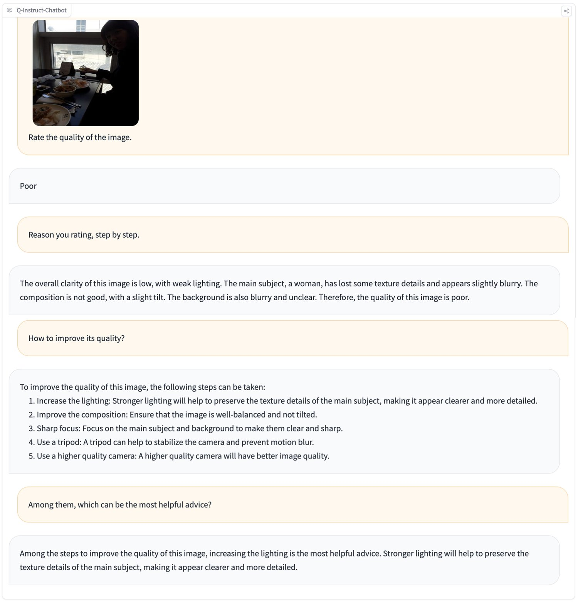
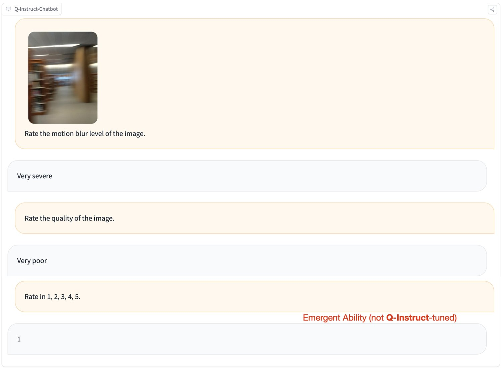
A chat between a curious human and an artificial intelligence assistant. The assistant gives helpful, detailed, and polite answers to the human’s questions. USER:<image>
<QUESTION>
Answer with the option’s letter from the given choices directly.
A. <CHOICEA>
B. <CHOICEB>
C. <CHOICEC>
ASSISTANT:
USER: <image>
<QUESTION>
Answer with the option’s letter from the given choices directly.
A. <CHOICEA>
B. <CHOICEB>
C. <CHOICEC>
ASSISTANT:
<|User|>: <image>Please answer this question by choosing the correct choice.Context: N/A
Question: <QUESTION>
Options: A. <CHOICEA>
B. <CHOICEB>
C. <CHOICEC>
<TOKENS_UNUSED_0> <|Bot|>: Answer: The answer is
For the (A2) Description task, we unify all models under the same prompt: “Describe and evaluate the quality of the image.”, as this is the only prompt that can effectively allow every base model to describe low-level visual attributes and then evaluate image quality. For the alternate prompt as shown in Fig. 1, “Rate the quality of the image. Think step by step.”, the base InternLM-XComposer-VL only provides numbers (1/2/3/4/5) without explanations or reasonings. Therefore, we choose the current prompt to evaluate the description ability among all variants.
For the (A3) Quality Assessment task, we follow the strategy as proposed by Q-Bench [57], with the softmax output between good and poor to collect better quantifiable scores for images, under the first output token of MLLMs:
| (1) |
For KoNViD-1k, the video quality assessment dataset as evaluated, we sample one frame per second (the same as NIQE [34]), and average the image quality scores as calculated by Eq. 1 among frames. While we acknowledge that this is not the optimal strategy for evaluating video quality, the excellent results in Tab. 6 already significantly outperform all methods that are not trained for video quality assessment, suggesting that if better strategies are adopted, MLLMs can do even better on video quality assessment.
Considering that different base MLLMs reach similar performance after low-level visual instruction tuning, we build a publicly-accessible demo for Q-Instruct-mPLUG-Owl-2 under the mix strategy, and invite our team members to really chat with it. These conversations exhibit its exellent abilities on various scenraios, including multi-turn queries (Fig. 8), multi-purpose assessment (Fig. 9), correction (Fig. 10), and local in-context perception (Fig. 11).
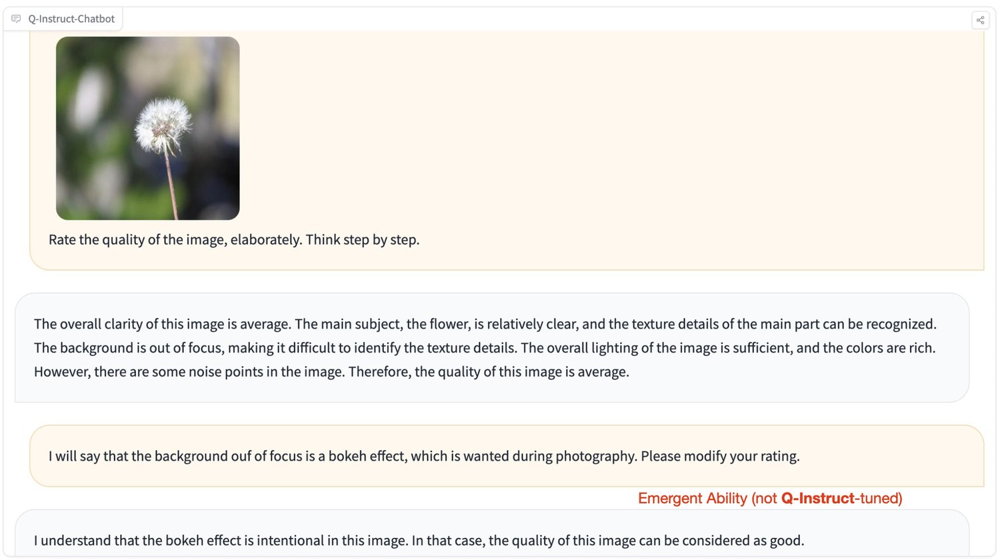
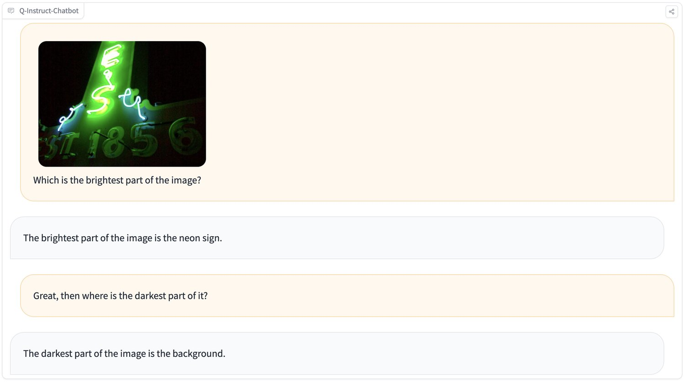
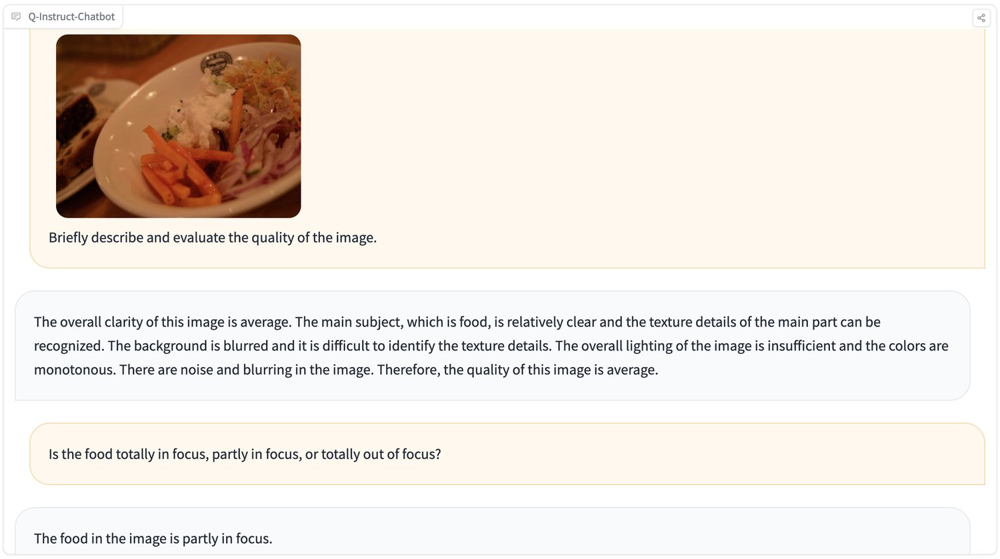
The known limitations of our studies are as follows. First, though with improved quality assessment and low-level visual perception abilities, the Q-Instruct-tuned models have witnessed declined performance on general-purpose tasks, especially language-centric tasks, or tasks that require heavy reasoning abilities. Therefore, they may produce unwanted outputs if applied to tasks other than low-level visual perception and understanding. Second, though with improved accuracy, the Q-Instruct-tuned models still perform worse (68%-71% accuracy on LLVisionQA-test) than an average human (about 74%), and may not yet be able to directly replace human on low-level related tasks. Thirdly, the Q-Instruct dataset mainly consists of natural in-the-wild images. Though they prove excellent generalization on other types of visual contents, the performance might still be improveable if further tuned on these datasets.
In our study, all participants were fully informed about the nature and amount of the tasks involved prior to their participation. No uncomfortable content was reported during this process. We express our gratitude to the participants for their valuable contributions, which were essential to the success of our research. We commit to upholding all ethical standards to ensure the well-being of our participants, as well as the integrity of our research findings.
Our team would like to sincerely thank Qinghao Ye and Xiaoyi Dong for providing pre-trained weights of mPLUG-Owl-2 and InternLM-XComposer-VL after the low-level visual instruction tuning, including a complete training recipe on their respective high-level datasets mixed with the Q-Instruct. We believe these weights will significantly contribute to the open-source community working on tasks related to low-level visual perception and understanding.
Researchers and open-source developers are free to use the Q-Instruct dataset and the fine-tuned weights as provided for the four MLLMs. We also allow commercial use, while any commercial use should be pre-permitted by our team. Any usage should also comply with licenses of the original base models (inc. base LLMs such as Vicuna, LLaMA-2).